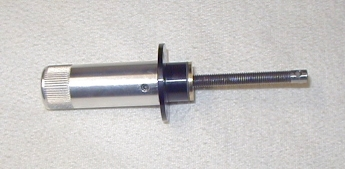
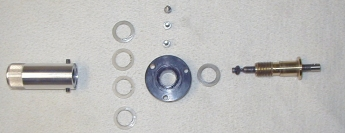
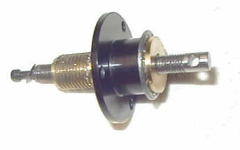
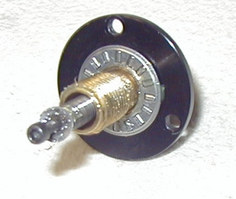

|
Focuser Bearing installation (Using 2 Torrington NTA-815 1/2" thrust bearings and a TRA-815 thrust washer) 1) Set the OTA so that the front (corrector end) is slightly above level. Run the mirror all the way forward (focuser counterclockwise) until you hit the stop. 2) Using a 5/64" allen wrench, remove the focuser from the OTA. Remove the three stainless screws around the black aluminum flange. Back the focuser out of the OTA (pulling the mirror to the rear). You may need to play with the threaded rod a little to disengage it from the mirror pin.  3) Once the focuser is removed from the OTA, back off the two set screws in the focusing knob, but do not remove them. If one comes out, put it back in a 3/4-1 turn. Grab the brass bushing firmly and unscrew the focus knob from the brass bushing (CCW). 4) Clean off any excess grease from the components. Separate the nylon washers from the brass bushing and the focuser knob.  5) Pack two bearings with a wide temperature grease. I used an all temp conductive grease used in photocopiers (MITA AR-2, #84032163), Excess grease from the Dec or RA gears can also be used (red). 6) Slide one bearing over the brass bushing, then slide the aluminum flange over the top of the brass bushing. This bearing will be replacing the original nylon washer.  7) Slide the second bearing onto the brass bushing, against the opposite side of the black flange. Make sure the bearing rides on the brass bushing and won't slide off center. Finish with the thrust washer over the bearing.  8) Reinstall two nylon washers into the recess of the focus knob to make it flush with the thrust washer. Use a third if the last washer doesn't make it flush. Screw the focuser back onto the brass bushing and tighten until very slightly snug. Tighten the two allen screws just to the point of contact on the brass bushing. Alternate back and forth between the two set screws very slightly tightening them the same amount until the set screws are fairly tight. Do NOT overtighten the set screws. 9) Check the focuser mechanics. Turn the focus knob while holding the black flange firmly. Check that the focuser is smooth, without any binds. Also make sure the focus knob is centered on the brass bushing - check the runout of the focus knob (wobble). If the focus knob is off center go back to (8). 10) Reinstall the focuser assembly to the OTA. When installing the three allen screws to secure the flange to the OTA, adjust them iteratively, like the focuser knob set screws. Tighten them up snug, and once again do not overtighten the screws. 11) Run the mirror back and forth to each extreme a few times. As the grease runs through the bearings and surfaces, you should notice that when running the focuser clockwise, there's less drag than there is counter-clockwise. When you notice this, the grease has evenly dispersed amoung the parts. What you're feeling is the actual weight of the mirror being pushed up the OTA, and the effect of gravity when pulling it back down. 12) The focuser should not feel stiff. If so, back off on the focus knob (CCW) and retighten the set screws as above. There should be no bad spots (tight or loose) for the whole of the mirror movement. Mine feels quite nice, giving a feeling of an accurate mechanism, but not too loose or too tight. When turning the knob, I can just barely hear the needle bearings turning.
Notes I'd suggest removing the focuser after a month or so to check for wear on the brass and aluminum parts, since it's been suggested that wear does occur. I'll be checking mine if any changes are noticed in the feel of the focuser, or after 1 month of being installed. The set screws on the focuser knob now sit on the threads of the brass bushing. This doesn't seem to be a problem if tightened properly. This is caused by the bearings taking up more room than the nylon washers. One LX200 user shaved 3mm off the back end of the black flange so that the set screws would remain on the unthreaded portion.
Good luck - I hope yours installs as easily and as nicely as mine. I'm quite happy with the outcome. The only thing I may do is replace the 2 nylon washers with a brass washer in the future. If you have any questions, drop me an email by clicking here or leave your comments/questions on the Yahoo LX90 Users Group.
|| Back
to Contents || Wedge
adapter || Focuser
|| Azimuth
adjuster || Weight
Set || Dovetail
|| |